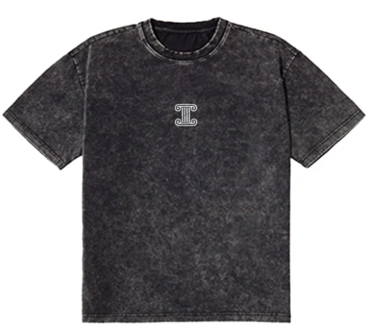

Titanfit
La samarreta fitness TitanFit és una peça dissenyada específicament per a activitats físiques intenses, oferint un equilibri òptim entre comoditat, estil i funcionalitat. Fabricada amb materials d´alta qualitat i tecnologia de punta, la samarreta TitanFit proporciona suport muscular, transpirabilitat i llibertat de moviment, ajudant a maximitzar el rendiment durant l´entrenament. El seu disseny ergonòmic i ajustament personalitzat la converteixen en una opció ideal per a aquells que busquen millorar la seva experiència d'exercici i assolir les fites fitness amb confiança.
Preu: 25,47 €